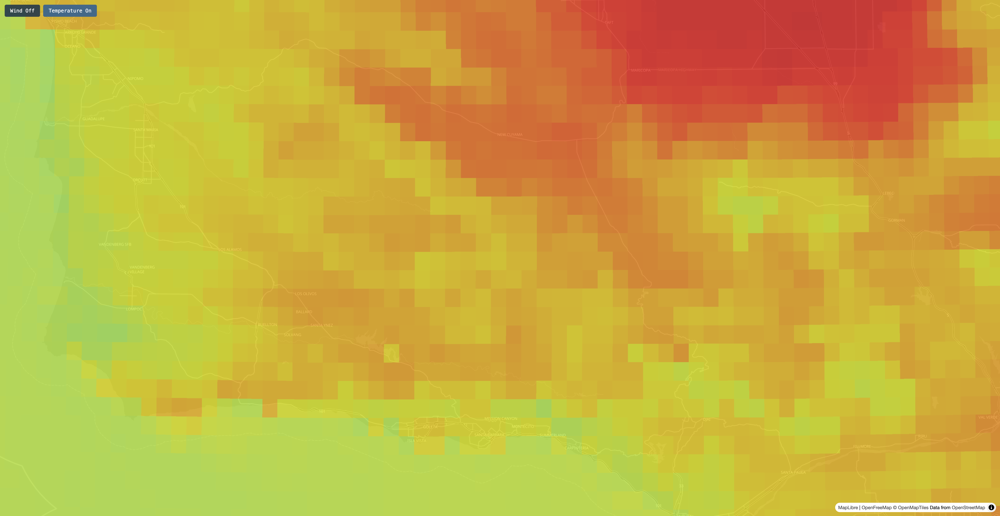

Wind
Particle MotionParticles sample local u/v-component velocity, move a small displacement, and are re-colored by local speed at each update interval. A flowing animation that makes direction and relative speed easy to read.
An Open-source Mapbox GL JS & MapLibre GL JS custom layers package
GPU-accelerated particle motion for wind: mapping wind is that easy and cost-effective.
No tile server required. Works with Mapbox GL JS and MapLibre GL JS.
Watch wind particles in action, then try the interactive demos below.

US continental wind particle animation on MapLibre GL JS globe projection — same custom layer, draped on the globe.
Watch on YouTube →Also see: US continental wind (Mapbox GL JS · v1.1.0) · Southern California (earlier demo)
Interactive US wind particles and temperature raster on MapLibre’s globe projection (v1.2.0+).
Open demo → Mapbox · CONUSContiguous United States wind particle animation and temperature smooth raster. Toggle each layer on and off.
Open demo → Mapbox · Southern CaliforniaNOAA NAM NEST forecast over Southern California — wind, temperature, humidity, precipitation with timestep controls.
Open demo →
Particles sample local u/v-component velocity, move a small displacement, and are re-colored by local speed at each update interval. A flowing animation that makes direction and relative speed easy to read.

Utilizing WebGL RGBA texture with linear filtering; the GPU bilinearly interpolates between adjacent texel values when sampling, producing a smooth gradient. Suitable for scalar (single-band) variables such as temperature and precipitation.

Visualize a small single-band GeoTIFF directly in the browser. Multi-band GeoTIFFs (each band holding a different scalar variable) are also accepted; just pick one band to display. Grid size should be no more than 4096x4096.

Display a true-color (RGB) or transparent (RGBA) GeoTIFF as a native map image layer. The file is decoded client-side and added as a Mapbox/MapLibre image source. Supports uint8 and uint16 bands.
mapbox-exif-layer?Mapbox Wind Layer relies on Mapbox’s proprietary Tiling Service to convert GRIB wind data into raster arrays tiled at multiple zoom levels. At high zoom (e.g. greater than 12), covering the extent can require a very large number of tiles — processing cost grows quickly, and pipelines sometimes hang or get killed before they finish. If you cap tiles at zoom 12 instead, particles look like blurry boxes sliding across the map when users zoom in to village, neighborhood, or street level — an aesthetic that is hard to accept for detailed views.
Open-source alternatives
mapbox-exif-layer |
maplibre-gl-wind |
sakitam-gis/maplibre-wind |
|
|---|---|---|---|
| MapLibre v5 support | Yes (with mapRuntime set to maplibre in constructor; v1.2.1+) |
Yes (via MapboxOverlay of deck.gl) | No (only works for MapLibre v3) |
| MapLibre Globe Projection | Yes | No | No |
| Particle colors vary by actual speed | Yes | Yes | No |
| Particle has tails | Yes | No | Yes |
| GeoTIFF support | Yes (sample code and data are provided; v1.3.1+) | No | Yes (mentioned in the doc, but no sample code or data supplied) |
| Image source support | Single JPEG or PNG | Single PNG | Single or tiled JPEG or PNG |
| Browser on mobile device support | Yes (native) | Yes (depends on deck.gl) | No (very likely to lose WebGL context) |
| NA/No data cells handling | Store 0 in B-band for NA cells (v1.1.0+) | Store 0 in A-band for NA cells | Require GeoJSON mask valid or invalid area and supply mask parameter to the layer constructor |
See more in Assessing packages for mapping wind as particle motion layer in MapLibre.
A JPEG or PNG used as a source is not a normal photo — it stores a normalized weather grid in
three 8-bit RGB bands (0–255 per channel). For wind (ParticleMotion),
u-velocity is min–max normalized to 0–255 in the R band and v-velocity in the
G band; no-data cells use B = 0 (valid cells use
B = 255). For a smooth raster (SmoothRaster), the scalar attribute is
normalized to 0–255 in the R band; no-data cells use B = 255
(valid cells use B = 0).
The layer also needs the physical min and max values used when encoding (before normalization). You can supply them in either of two ways:
ImageDescription (the classic
“EXIF-enabled JPEG” path; see
Method 2
in the docs).scalarValueRange on
SmoothRaster or velocityRange on ParticleMotion when the image has no
EXIF metadata (Method 1). If EXIF is present, it takes precedence.See docs/jpeg-source.md for encoding rules, both min/max workflows, and ready-to-use pipeline scripts.
Properly encoded JPEG/PNG rasters are much smaller than GeoTIFFs. On this site’s NOAA NAM NEST CONUS demo grid (2269×976), wind is ~332 KB as JPEG vs ~8.9 MB as ZSTD-compressed float32 GeoTIFF — a big difference for storage and download when you serve many forecast timesteps.
SmoothRaster look (linear texture filtering on 8-bit RGB). Min/max metadata can come from EXIF or constructor scalarValueRange / velocityRange.No. It targets Mapbox GL JS and MapLibre GL JS only — both WebGL map SDKs with a similar custom-layer API that this package implements. Leaflet and OpenLayers use a different rendering model and are not supported.
This package does not include a map SDK. Install one map runtime, then add
mapbox-exif-layer (and optionally geotiff for .tif sources).
Default mapRuntime: 'mapbox'
npm install mapbox-glSet mapRuntime: 'maplibre' on each layer
npm install maplibre-glnpm install mapbox-exif-layerOnly for .tif / .tiff URLs — JPEG-only setups do not need this.
npm install geotiffimport { ParticleMotion, SmoothRaster } from 'mapbox-exif-layer';